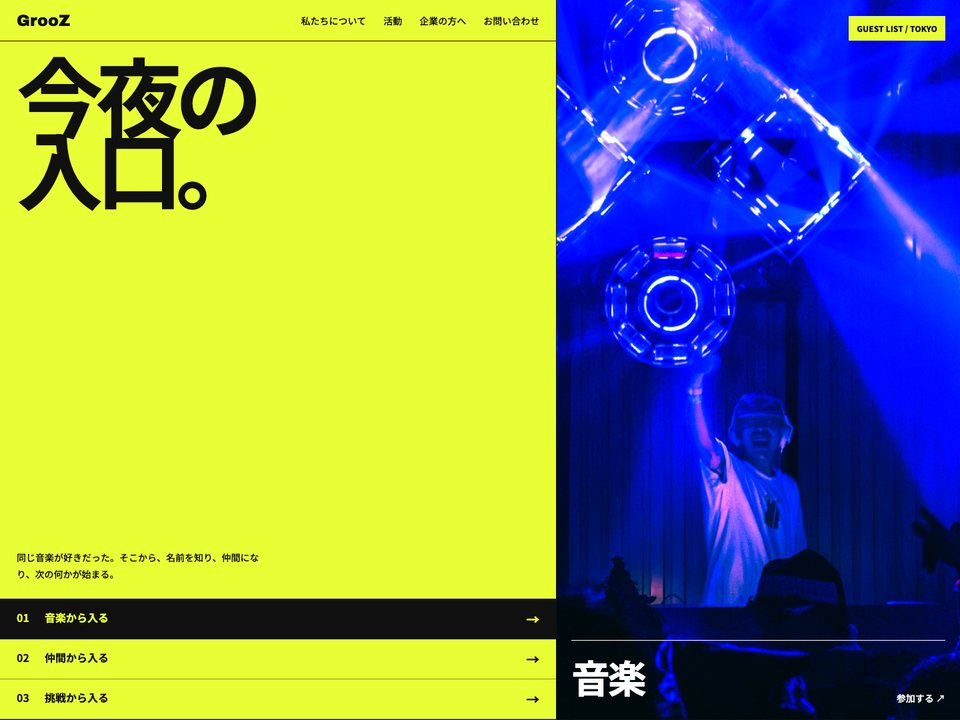

GrooZ
A Tokyo youth-culture platform for music, fashion and Shibuya nights, set entirely in Japanese.
- Origin
- Self-initiated. No client, no brief, nobody asked for it
- Scope
- Eleven-section single page, Japanese only
- Heroes built
- Four explored, one shipped
- Live
- grooz.vercel.app

Takes
Four ways into the same night.
Three of these lead with photography and one leads with a colour field. The colour field won. Point at any of them to see it in full.Each one resolves as it reaches the middle of the screen.
Build
What is actually in it.
- Type
- Japanese display typography on a CSS custom-property token set, 30 fluid
clamp()steps - Structure
- Eleven sections in a single file, 28 grid declarations, no framework
- Concept
- An entry stamp and guest list, carried through all four takes and into the shipped page
- Media
- Real photography rather than illustration, served from a CDN
- Meta
- Ships a drawn
favicon.svgand an OG card - Language
- Japanese only. No English fallback, by choice